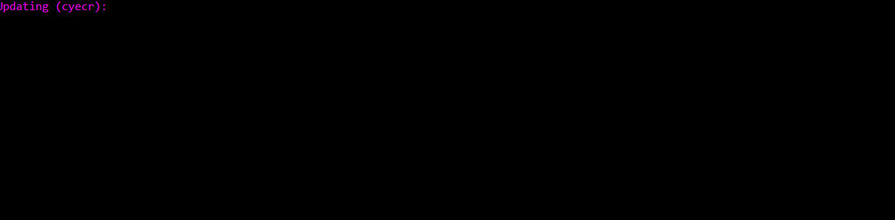
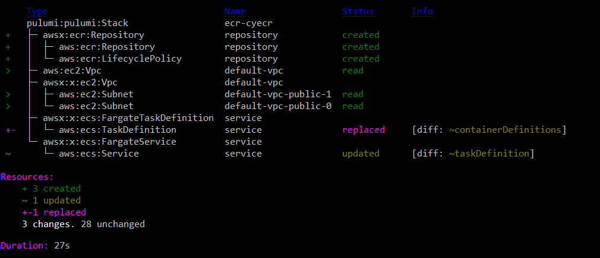

Building and Publishing Docker Images to a Private Amazon ECR Repository

Amazon Elastic Container Registry (ECR) is a fully-managed Docker container registry that makes it easy for developers to store, manage, and deploy Docker container images. ECR is integrated with Amazon Elastic Container Service (ECS), including for Kubernetes (EKS), simplifying your development to production workflow, securing access through IAM, and eliminating the need to operate your own container repositories or worry about scaling the underlying infrastructure. ECR hosts your images in a highly available and scalable architecture, allowing you to reliably deploy containers for your applications. In this article, we’ll see how Pulumi Crosswalk for AWS lets you use infrastructure as code to easily build, publish, and pull from private ECR repositories.
A Simple ECS Fargate Service
Let’s see how using Pulumi you can provision an ECR repository, and build and publish to it, in just a few lines of code. Additional features such as lifecycle management make it easy to declare policies specifying how and when stale images should be dropped. Built images can then be referenced from your ECS services (whether EC2, Fargate, or EKS), allowing you to easily version both your images and your infrastructure with one simple, auditable, system.
Let’s take a look at this in action. First, we’ll just start with a
simple Pulumi program that creates a load balanced Fargate Service that
accessible to the internet, but uses the public nginx container
image from the Docker Hub:
// A simple NGINX service, scaled out over two containers.
const nginx = new awsx.ecs.FargateService("nginx", {
cluster,
desiredCount: 2,
taskDefinitionArgs: {
containers: {
nginx: {
image: "nginx",
memory: 128,
portMappings: [new awsx.elasticloadbalancingv2.ApplicationListener("nginx", { port: 80 })],
},
},
},
});
export const nginxEndpoint = nginxListener.endpoint;Running this give us:
Updating (teststack):
Type Name Status
+ pulumi:pulumi:Stack teststack created
+ ├─ awsx:x:elasticloadbalancingv2:ApplicationLoadBalancer nginx created
+ │ ├─ awsx:x:elasticloadbalancingv2:ApplicationTargetGroup nginx created
+ │ │ └─ aws:elasticloadbalancingv2:TargetGroup nginx created
+ │ ├─ awsx:x:elasticloadbalancingv2:ApplicationListener nginx created
... more output trimmed ***
Outputs:
nginxEndpoint: { hostname: "********", port: 80 }
Resources:
+ 36 created
Duration: 3m19s
We have trimmed the output, since this simple program provisioned 36 AWS resources, connected them accordingly, and stood up a load balanced ECS Fargate service that automatically uses cloud deployment best practices.
Here, through the use of image: "nginx" we are letting ECS know that
we want to use this publicly
available Docker Hub image. ECS supports pulling these images for you by
default and making them available to your services. If you’re using a
public image, this works great and no further work is necessary on your
part.
Using a Private ECR Repository
There are many times, however, when you or your organization may not want to use public images, such as private applications that aren’t meant to be shared with the Internet. The Docker Hub supports private images, however, if you’re already building on AWS, Amazon ECR is a valuable service that allows you to host those images in your AWS account, leveraging IAM for secure authentication, and ensuring easy, fast and secure access from your containers.
Let’s see what that looks like with Pulumi. First, we’ll create a simple
Dockerfile that starts with the base
nginx image and slightly modifies it
to contain our own custom index.html file:
The Dockerfile:
FROM nginx
COPY content/index.html /usr/share/nginx/html
The index.html file:
<h1> Hi from Pulumi! </h1>
Now, let’s see how we’d update our Pulumi app to build this custom Docker image, push it to ECR, get the resulting image name, and reference it from our ECS service (it works the same in both ECS and EKS):
// common code from before trimmed out
const repository = new awsx.ecr.Repository("repo");
// Invoke 'docker' to actually build the DockerFile that is in the 'app' folder relative to
// this program. Once built, push that image up to our personal ECR repo.
const image = repository.buildAndPushImage("./app")
const service = new awsx.ecs.FargateService("service", {
// ... common code from before trimmed out
taskDefinitionArgs: {
containers: {
service: {
image: image,
...So let’s see what happens when we actually try to run this:

As you can see Pulumi is actually launching the real docker executable
locally to use the Dockerfile to build the image. As docker runs,
the output is captured and automatically shown in the real-time Pulumi
update display. When the image is finished building, it is pushed by
docker itself to the ECR repo. Pulumi safely passes temporary repo
credentials to the docker executable so it can login and push the
image up. Finally, once available in ECR, the task-definition and
service are appropriately updated to now reference this new image. ECS
will then ensure that the old services are spun down and the new
services are spun up.
TL;DR, just run pulumi up, and it takes care of all the heavy lifting.
In the end we see:

In less than 30 seconds, Pulumi and Docker built the private image, made
it available on ECR, and properly moved the Service over to using it.
This was all done with a single command, with Pulumi smartly figuring
out at the end of the day exactly what changes needed to be made. From
the above we can see just the creation of the Repository components, and
the updates of the Service to now use it. A nice minimal change that
exactly matches our intuition around what would happen. If necessary,
the .buildAndPushImage operation can also take many more options to
control what’s happening with docker. Options around tagging and
caching can be configured, and the docker command line can also just
be augmented if necessary to handle advanced scenarios.
Managing ECR Lifecycle Policies
In practice, an organization may be producing and uploading many images to their private ECR repositories. This can add up in costs as time goes on, especially when old images are stored that will never be used again. To aid with this, Pulumi makes it easy to set up ECR Lifecycle Policies to control the lifetime of your images and to easily purge unneeded images based on flexible criteria to meet your needs.
As a simple example, here’s a way to just remove any untagged images that are older than one week old:
// common code from before trimmed out
const repository = new awsx.ecr.Repository("repo", {
lifeCyclePolicyArgs: {
rules: [{
selection: "untagged",
maximumAgeLimit: 7,
}],
},
});Now, you can keep your last two weeks of images around if you want them
with all tagged images (like 'latest') being preserved. You can
continue pushing rapidly to your repo without having to worry about
manually going and cleaning up the stale garbage in the future.
Next Steps
We’ve shown how Pulumi Crosswalk for AWS can create a tight developer inner loop for building, publishing, and consuming Docker images, using private ECR repositories, while keeping all your ECS or EKS services and tasks updated properly and securely. This can be done with flexible policies to ensure that your repos contain the images you care about and don’t keep holding onto images you no longer need, and is all possible from a single Pulumi app with simple commands to keep everything in sync.
Pulumi is open source and free to use. For more information on Getting Started, check out:
- AWS QuickStart
- Pulumi Crosswalk for AWS Announcement
- Mapbox IOT-as-Code with Pulumi Crosswalk for AWS
- Pulumi Crosswalk for AWS Documentation for ECS, EKS, ELB, and more
We think there’s no easier way to do containers in a tight inner development loop, and we hope you agree!
Posted on